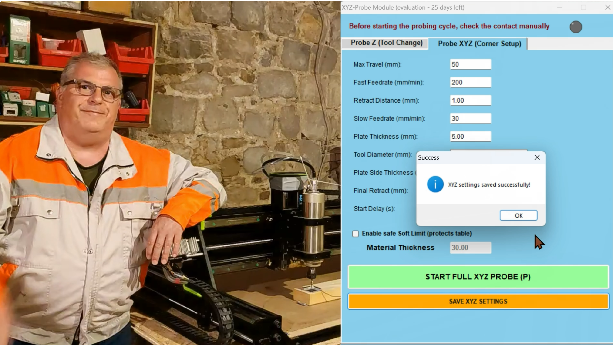

About Us
The craftsmanship behind the BOREA GRGIĆ brand

Our philosophy is built on uncompromising quality and uniqueness. Marko Grgić is the master craftsman and designer behind every project that leaves the Borea Grgić workshop. By merging advanced CNC technology with traditional woodworking, Marko transforms raw, live-edge timber into functional pieces of art. Each product is a result of rigorous engineering precision and a deep respect for the natural properties and grain of the wood. Through the fusion with premium epoxy resins, we transform natural imperfections and wood grains into elegant visual contrasts, creating luxurious textures that bring depth and an unrepeatable character to every product.
Drago Grgić is the mind behind the software domain. His role encompasses the maintenance, calibration, and hardware optimization of our CNC machine, alongside the development of custom software scripts that streamline our machining processes. With an engineering approach and technical support across all vital production stages, Drago ensures that every digital design and computational model is flawlessly executed onto the physical material.